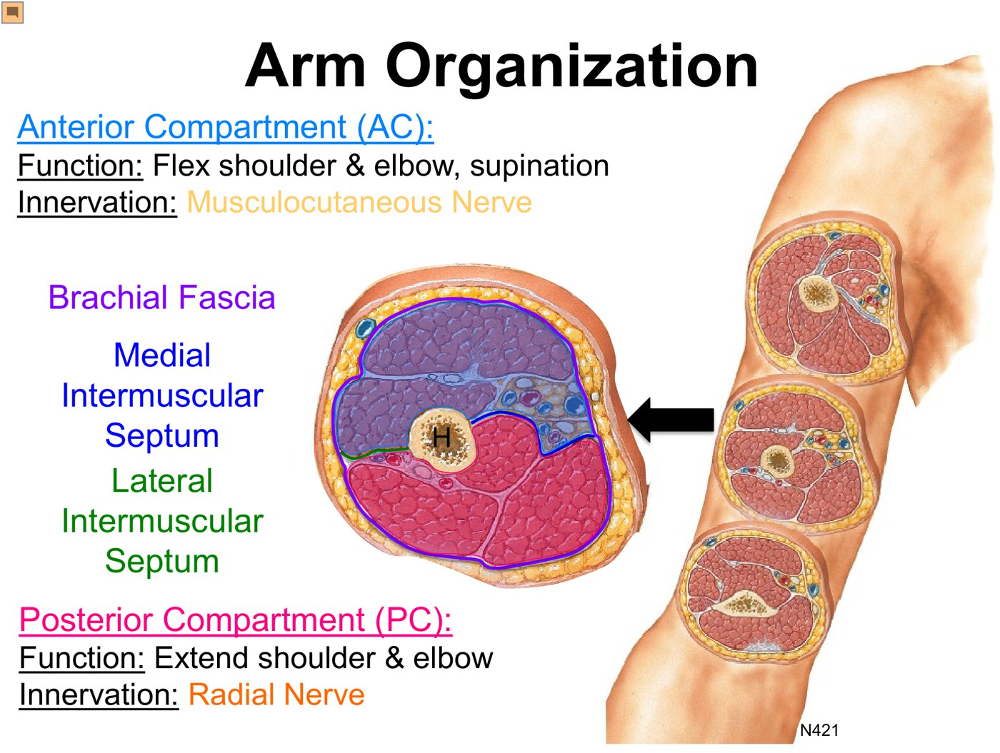
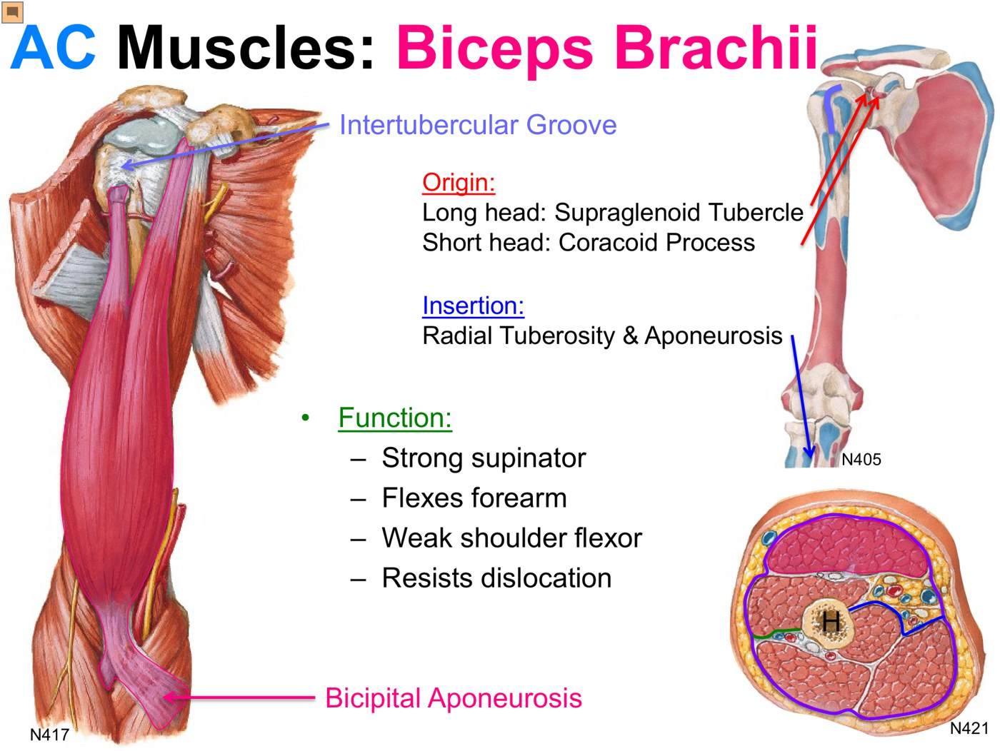
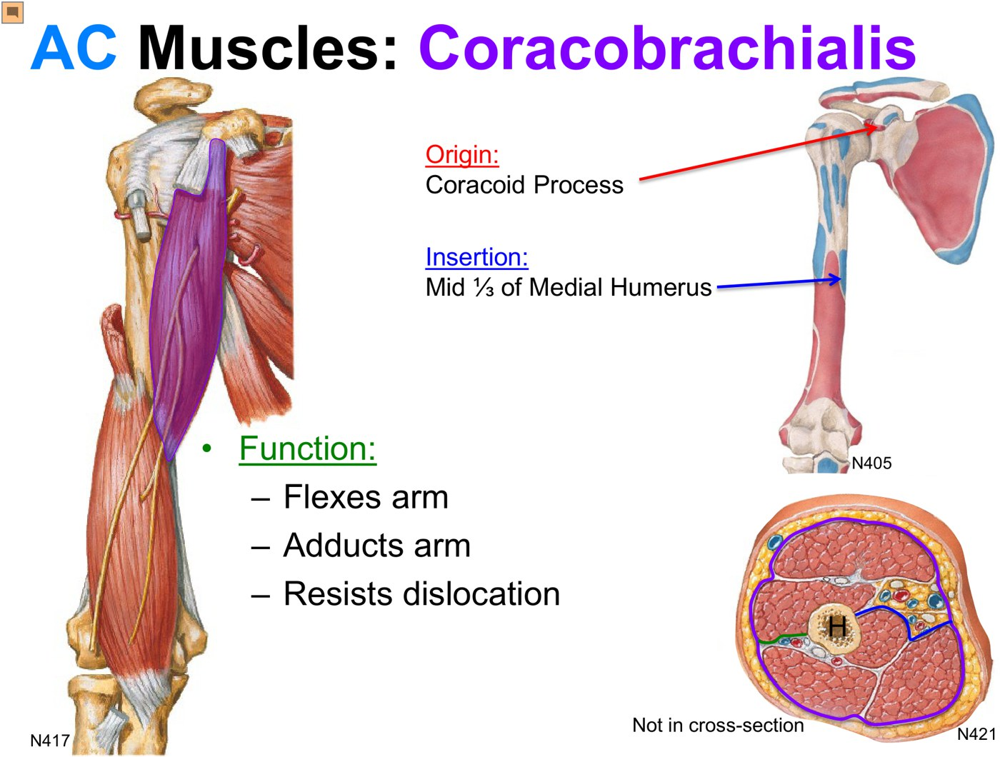
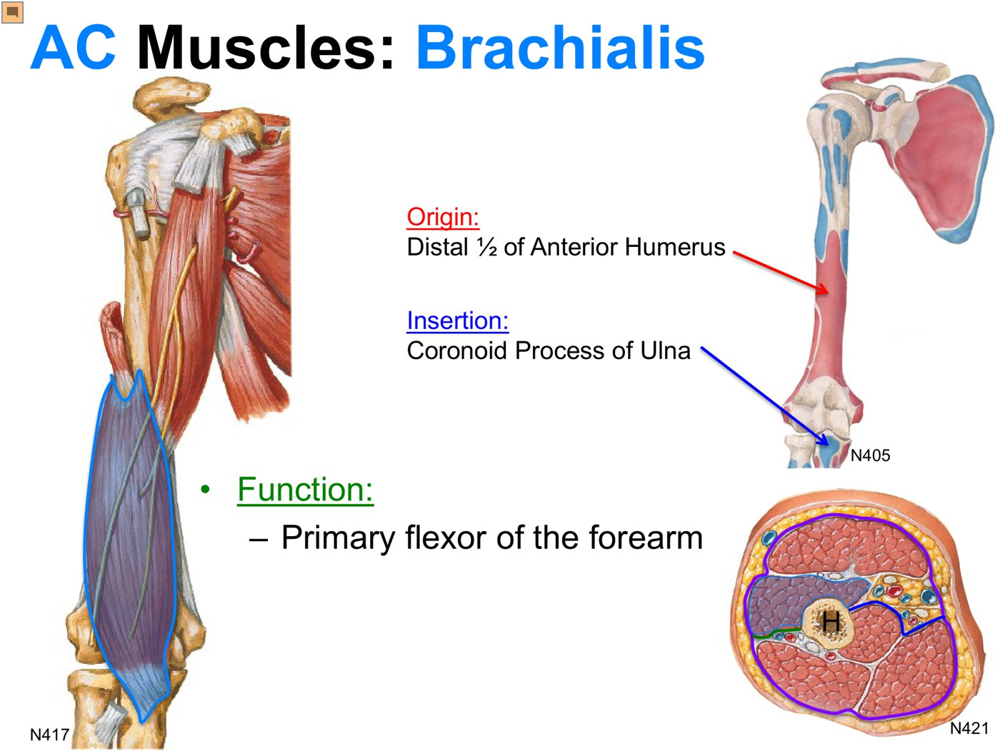
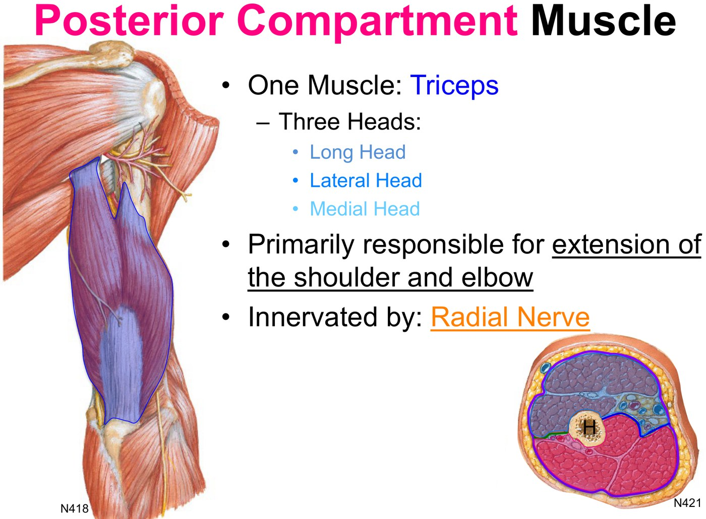
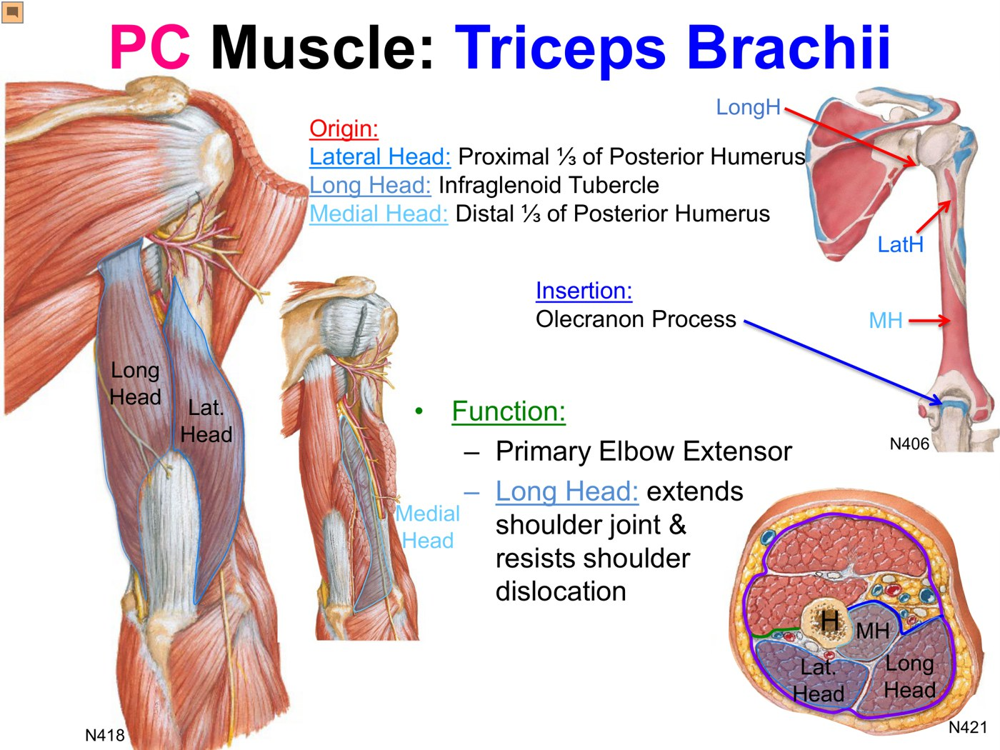
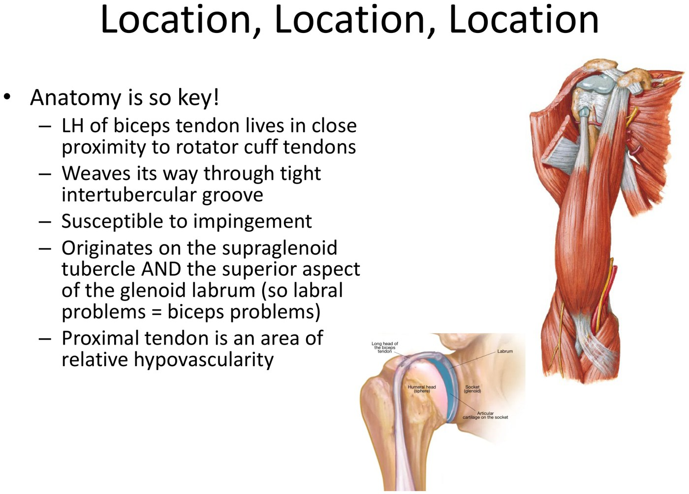

Clinical Approach to the Muscles of the Arm
- The medial and lateral intermuscular septa split the arm into two compartments. Anterior flexes the shoulder and elbow and supinates, all supplied by the musculocutaneous nerve. Posterior extends the shoulder and elbow, all supplied by the radial nerve.
- Biceps brachii is the primary supinator, not the primary elbow flexor. Long head from the supraglenoid tubercle (through the intertubercular groove), short head from the coracoid; it inserts on the radial tuberosity and the bicipital aponeurosis.
- Brachialis is the primary elbow flexor whatever the forearm position: distal ½ of the anterior humerus → coronoid process of the ulna.
- Coracobrachialis (coracoid → middle ⅓ of the medial humerus) crosses only the shoulder: it flexes and adducts. The musculocutaneous nerve pierces it.
- Triceps inserts on the olecranon and is the primary elbow extensor. Only the long head (from the infraglenoid tubercle) crosses the shoulder, so only it extends the shoulder.
- Proximal biceps tendinopathy (long head) means anterior shoulder pain and tenderness in the intertubercular groove. It's mostly degenerative, so “tendinopathy”, not “tendinitis”. Physio is the mainstay. A complete tear gives a Popeye deformity.
Learning Objectives
- Identify the important functional anatomy of the upper extremity, as it pertains to clinical presentations of arm pathology.
- Identify the major muscles of the upper extremity (shoulder girdle, brachium, the forearm muscles from the medial and lateral epicondyles, the hand).
- Create a differential diagnosis and management plan for upper extremity complaints: numbness, weakness, pain and loss of range of motion.
- Describe the anatomic basis of common shoulder pathology: AC separation, rotator cuff disease, biceps tendinopathy, arthritis, instability and adhesive capsulitis.
Dr. Charys Martin (anatomy) and Dr. Caitlin Cassidy (proximal biceps tendinopathy), 33 minutes. The objectives are shared with the other upper-limb modules, the labs and Clinical Skills. This module and Neurovascular Supply are the prep for the Proximal Upper Extremity Part II lab. It builds on Muscles of the Shoulder, Brachial Plexus and the joints of the proximal upper extremity.
The Muscles
Dr. Martin's recording and its knowledge checks.
Arm Organization: Two Compartments
The arm runs from the shoulder to the elbow. Under the skin and subcutaneous tissue is its deep fascia, the brachial fascia. Two septa run from the fascia to the humerus and split the arm into two compartments. Each compartment has one job and one nerve, so learn the compartment and you know every muscle in it.
| Compartment | Muscles | Function | Nerve |
|---|---|---|---|
| Anterior | Biceps brachii, coracobrachialis, brachialis | Flex the shoulder and elbow; supinate the forearm | Musculocutaneous (terminal branch of the lateral cord) |
| Posterior | Triceps brachii (three heads) | Extend the shoulder and elbow | Radial (supplies the whole posterior upper limb) |

The Anterior Compartment
| Muscle | Origin | Insertion | Crosses | Action |
|---|---|---|---|---|
| Biceps brachii | Long head: supraglenoid tubercle Short head: coracoid process | Radial tuberosity + forearm fascia via the bicipital aponeurosis | Shoulder + elbow | Strong supinator; flexes the forearm (mainly when supinated); weak shoulder flexor; resists dislocation |
| Coracobrachialis | Coracoid process | Middle ⅓ of the medial humerus | Shoulder only | Flexes and adducts the arm; resists dislocation |
| Brachialis | Distal ½ of the anterior humerus | Coronoid process of the ulna | Elbow only | Primary flexor of the forearm |

Biceps brachii. Slide from the deck.
Coracobrachialis (biceps removed). Slide from the deck.
Brachialis. Slide from the deck.Put two fingers on your biceps tendon and turn the forearm palm-up, palm-down: the tendon tightens with every supination, with no elbow movement at all. Biceps only helps flex the elbow when the forearm is supinated (a classic curl). In a hammer curl or a reverse curl the work is brachialis. Brachialis flexes in any position, and as it bulks up it pushes the biceps forward, so the biceps looks bigger and gets the credit.
A crossed joint is an acted-on joint. Biceps crosses the shoulder, so it's a weak shoulder flexor and helps hold the head in the glenoid. Brachialis crosses only the elbow; coracobrachialis only the shoulder.
The long head is the longer head, even if it looks shorter in the picture: it runs through the intertubercular groove and over the top of the humeral head to reach the supraglenoid tubercle.
The musculocutaneous nerve leaves the lateral cord and immediately pierces coracobrachialis, supplies it, then carries on to the rest of the compartment.
Dr. Martin's advice on attachments: you don't need them in fine detail, but know roughly where each muscle starts and ends; that gives you its action and lets you find it in the lab. Note the attachment points that keep coming up, such as the coracoid (pec minor, the short head of biceps and coracobrachialis all attach there).
The Posterior Compartment: Triceps
| Head | Origin | Crosses the shoulder? |
|---|---|---|
| Long (medial side, superficial) | Infraglenoid tubercle of the scapula | Yes: extends the shoulder and resists dislocation |
| Lateral | Proximal ⅓ of the posterior humerus | No |
| Medial (deep to the lateral head) | Distal ⅓ of the posterior humerus | No |
All three join one common tendon on the olecranon process of the ulna, the bony point of the elbow. Together they are the primary elbow extensor, supplied by the radial nerve.

Posterior compartment. Slide from the deck.
Triceps brachii, lateral head reflected to show the medial head. Slide from the deck.The long head of biceps starts above the glenoid (supraglenoid tubercle); the long head of triceps starts below it (infraglenoid tubercle). Both cross the shoulder, so both act on it and both help keep the humeral head in the glenoid fossa.
Knowledge checks
Nerve to each compartment (on the brachial plexus diagram): the anterior compartment is the musculocutaneous nerve (D on the diagram) and the posterior compartment is the radial nerve (H).
The cadaver exercise (subscapularis A, brachialis B, biceps brachii C, deltoid D) is a photograph, so it's left out.
Proximal Biceps Tendinopathy
Dr. Cassidy's recording.
What It Is and Why It Happens
A common cause of shoulder pain, nearly always in the long head. The word “tendinopathy” is deliberate. “Tendinitis” means inflammation only, but most proximal biceps problems are chronic overuse and degeneration (tendinosis). Tendinopathy covers the whole spectrum: tendinosis, acute inflammation, and partial or complete tears.
| Who | Why |
|---|---|
| Younger | Athletes, especially overhead throwing; inflammatory conditions such as rheumatoid arthritis |
| Older (much more common) | Overuse and degeneration over time, often alongside rotator cuff disease |

| Anatomy of the long head | So… |
|---|---|
| Lies right beside the rotator cuff insertions | Cuff breakdown drags it into the same process |
| Runs through the tight intertubercular groove | Friction and irritation |
| Passes under the acromion to the supraglenoid tubercle | Impingement, as with the cuff |
| Also arises from the superior glenoid labrum | Labral problems = biceps problems |
| The proximal tendon is relatively hypovascular | Degenerates and heals poorly |
Presentation and Diagnosis
| Finding | |
|---|---|
| History | Acute (tear or inflammation) or, more often, chronic (degeneration, overuse) onset. Deep anterior shoulder pain: achy, or sharp after a flare. |
| Palpation | Tender over the tendon in the intertubercular groove, the most useful exam step. Can't find it? Rotate the arm in and out, and the rope-like tendon rolls under your thumb. |
| Provocation | Worse with shoulder flexion and elbow flexion, particularly with the forearm supinated (Speed's and Yergason's tests, taught in Clinical Skills) |
| Frank tear | Weakness (supination especially; other muscles cover flexion, so motion is rarely lost outright). The muscle retracts down the arm, leaving a bunched-up distal bulge: the Popeye deformity. |
The examination slide is photographs of a model and an examiner, so it's described rather than shown.
Differential: other causes of anterior shoulder pain
| Diagnosis | Why it's on the list |
|---|---|
| Rotator cuff tendinopathy | Often coexists and can be hard to separate |
| Subacromial bursitis | Same neighbourhood |
| Labral tear (SLAP lesion) | The long head arises from the superior labrum, so the pain is similar |
| Glenohumeral or AC joint arthritis | Can present this way |
| Cervical radiculopathy | An upper root (C4 or C5) can put the pain at the shoulder; look for neuropathic pain, numbness or tingling, and weakness |
| Referred pain | Facetogenic (cervical facet joints refer to the top of the shoulder) or visceral: don't forget organs can present as shoulder pain |
Investigations
| Test | Use |
|---|---|
| Clinical exam | Often the most helpful step, and the mainstay of decisions |
| X-ray | Doesn't show tendon tears or tendinopathy; consider it if you suspect impingement or arthritis |
| Ultrasound | If the diagnosis is unclear: sees the biceps, the cuff tendons and the subacromial bursa at the same time |
| MR arthrogram (dye injected into the joint) | If you suspect a SLAP lesion |
Knowledge check
A patient has anterior shoulder pain. Which is low on the differential: AC separation, glenohumeral arthritis, rotator cuff pathology, proximal biceps tendinopathy or C8 radiculopathy? → C8 radiculopathy. All the others can cause anterior shoulder pain. A high cervical root (C4 or C5) can give shoulder symptoms, but C8 pain and paraesthesiae go to the hand.
Management
Prognosis depends on the injury. An athlete with an acute rupture is a different conversation. Most cases are chronic degeneration in older patients, and they improve with conservative care.
Modalities (ultrasound, heat, cold) can help acute pain, but active therapy that strengthens the muscle and its supporting muscles is what resolves it. Add relative rest from overhead activity.
Acetaminophen, or topical or oral NSAIDs. Steroid injection is possible, ideally with a specialist.
A degenerate or chronically torn tendon usually can't be stitched back together. Instead the tendon is released proximally and reattached lower down (a tenodesis), keeping its length and tension without the painful pull.
Built from Dr. Charys Martin and Dr. Caitlin Cassidy's “Clinical Approach to the Muscles of the Arm” module: the two recordings, the knowledge checks, the 16-slide detailed deck and Dr. Martin's anatomy notes. Left out and described in text: the cadaver knowledge check and the examination photographs. Discrepancy flagged: the slide and the recording expand SLAP as “superolateral anterior to posterior”; the standard expansion is superior labrum, anterior to posterior. The tear sits at the top of the labrum, where the long head attaches, either way. Caption corrections: supination and supinated (“soup nation”, “supposition”, “super needed”, “simulated”), pronation (“per nation”), posterior (“posture”), musculocutaneous (“muscular cutaneous”), biceps brachii (“biceps brachial”), supraglenoid tubercle (“super glenoid”, “super glue material”), infraglenoid (“inferred glenoid”), intertubercular (“injured tubercular”, “inter tubercular”), radial tuberosity (“radial to porosity”, “radio to voracity”), bicipital aponeurosis (“bicep it'll upon your process”), coracobrachialis (“cortical brachial”, “cargo brachial”), brachialis (“breaking Alice”), coronoid (“coronary”), olecranon (“election”), long head (“lung head”, “long haired”), tendinosis (“tendonitis”), retraction (“attraction”), Speed's and Yergason's tests (“speeds. And your tests”), subacromial (“cybercriminal”), AC joint (“achy joint”), radiculopathy (“ridicule apathy”), facetogenic (“for set of genic”) and arthrogram (“Arthur Graham”).